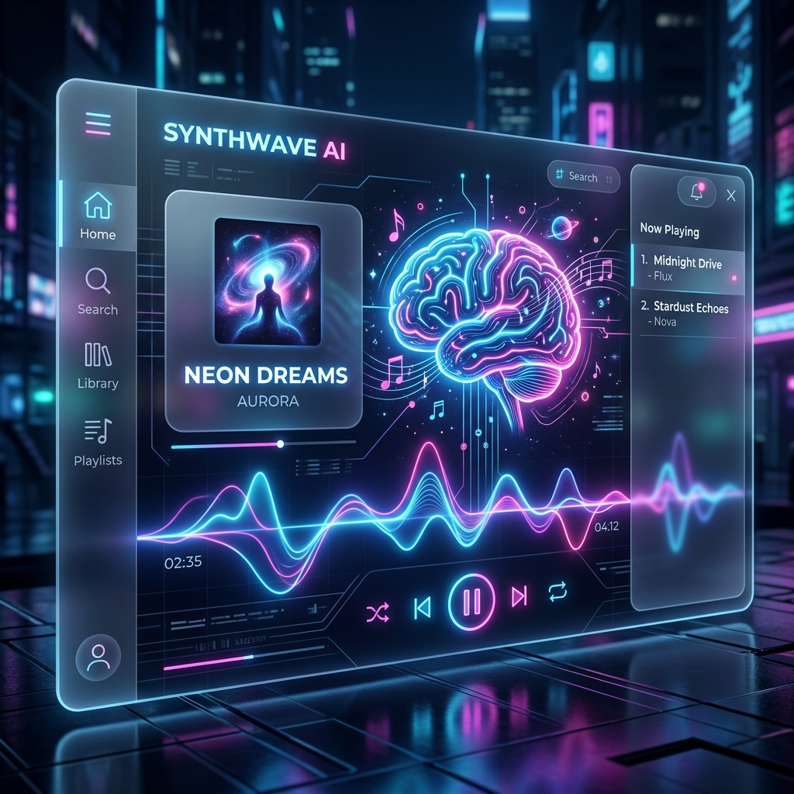

Masa Depan Streaming Musik: Peran AI yang Tak Terelakkan

Industri musik sedang berada di ambang revolusi besar. Jika satu dekade lalu kita terobsesi dengan transisi dari fisik ke streaming, kini musik sedang memasuki era "Generative and Intelligent Listening". Kecerdasan Buatan (AI) bukan lagi sekadar fitur tambahan, melainkan jantung dari ekosistem musik modern.
1. Hyper-Personalization: Algoritma yang Mengenal Jiwa Anda
Selama bertahun-tahun, algoritma streaming seperti yang digunakan VCMusic telah mampu menyarankan lagu berdasarkan riwayat pendengaran. Namun, di masa depan, AI akan mengambil langkah lebih jauh. Bukan hanya berdasarkan apa yang Anda dengarkan, tapi berdasarkan bagaimana perasaan Anda saat itu.
AI akan mampu menganalisis pola detak jantung dari jam tangan pintar atau mendeteksi ekspresi mikro melalui kamera untuk menyesuaikan tempo dan mood musik secara otomatis. Bayangkan sebuah playlist yang melambat saat Anda stres dan menjadi lebih enerjik saat Anda mulai berolahraga, tanpa Anda harus menyentuh layar satu kali pun.
2. Generative Music: Musik yang Dibuat Saat Itu Juga
Konsep musik generatif berarti trek musik dibuat secara real-time oleh algoritma. Ini sangat populer di genre Lofi atau Ambient. AI tidak lagi hanya memutar file mp3 statis, melainkan menyusun instrumen—piano, bass, drum—berdasarkan parameter tertentu yang unik untuk setiap pendengar.
Hasilnya? Anda bisa mendengarkan lagu yang tidak pernah ada sebelumnya dan tidak akan pernah sama saat diputar kembali. Ini memberikan tingkat eksklusivitas yang belum pernah dirasakan dalam media digital massal.
Statistik Penting
Data internal VCMusic menunjukkan bahwa 65% pengguna lebih memilih playlist yang disusun dengan bantuan AI daripada yang disusun secara kronologis murni. Personalisasi adalah kunci loyalitas pendengar di tahun 2026.
3. Kolaborasi Antara Manusia dan Mesin
Ada kekhawatiran bahwa AI akan menggantikan musisi. Namun, sejarah menunjukkan bahwa teknologi selalu menjadi alat untuk kreativitas. AI membantu produser menemukan harmoni baru, membersihkan vokal yang kurang sempurna, hingga memberikan saran struktur lagu yang lebih "ear-friendly".
VCMusic mendukung perkembangan ini dengan memberikan ruang bagi musik-musik eksperimental yang lahir dari kolaborasi cerdas ini. Kami percaya bahwa kreativitas tanpa batas hanya bisa dicapai jika manusia memiliki alat yang setara dengan imajinasinya.
Kesimpulan
AI bukan ancaman bagi industri musik; ia adalah evolusi. Dari kurasi yang lebih personal hingga penciptaan konten yang benar-benar baru, teknologi ini membantu kita merayakan musik dengan cara yang lebih dalam dan bermakna.
Ingin merasakan kecanggihan kurasi cerdas kami? Mulailah petualangan musik Anda di VCMusic Player sekarang.
VCMusic Editorial Team
Mengkurasi tren dan teknologi musik terbaik untuk Anda.